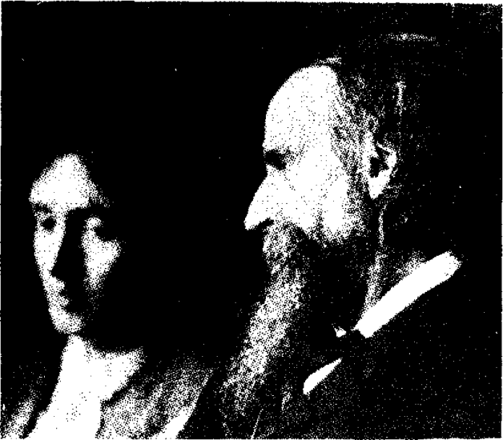

Bölüm 6
Virginia Woolf’un Feminizmi
Virginia Woolf, feminizmi savunan iki kitap yazmıştır. Bu feminizmin, babasının otoritesinden, anne bir ağabeysinin cinsel sataşmalarından ve kendi lezbiyen eğilimlerinden kaynaklandığı sanılır genellikle. Bu bir yanılgıdır bize kalırsa. (Herkesçe bilindiği gibi feminist kadınların ancak yüzde beşi lezbiyen sayılabilir.) Babası, bunu hiç istemeden de olsa, salt kişiliğinin ağırlığıyla kızını ezmeseydi; ağabeyi normal bir kardeş gibi davransaydı, kendisi de kadınlardan hoşlanmasaydı; Virginia Woolf, 1920’li yıllarda gene de feminizmi savunurdu büyük bir olasılıkla.
Bunun ilk nedeni, XIX. yüzyılın sonunda, yani Virginia Woolf on sekiz yaşındayken, kadınlarla erkekler arasındaki eğitim eşitsizliğiydi. Virginia Woolf’un, Oxford ile Cambridge adlarını birleştirerek Oxbridge dediği iki büyük üniversiteden Oxford’a, kadınlar ancak 1920’de kabul edilmişti. Cambridge ise, kadınlara yalnız “titular” denilen türden diplomalar veriyordu. Şöyle ki, kadınlar diploma alabiliyorlar; ama bu diplomanın sağladığı ayrıcalıklardan yararlanamıyorlardı. Devlet memurluğu sınavlarına ancak 1926’da girebildiler. Babasının büyük kitaplığından ve birkaç özel dersten yararlanarak kendini yetiştiren Virginia Woolf, Cambridge’e giden erkek kardeşlerine sağlanan eğitimden yoksun kaldığının bilincindeydi ve bunun acısını çekti ömrü boyunca.
Bilindiği gibi, Oxford ile Cambridge’de fakülteler değil, “college”ler vardır. Cambridge’de kadınlar, erkek college’lerine giremiyorlar; ancak Newnham ve Girton gibi kadın college’lerine girebiliyorlardı. Bu iki kadın college’inin verdiği eğitim düzeyi, erkek college’lerindekinden çok daha düşüktü. Erkekler, en iyi öğretim üyelerinin derslerinden yararlanırken, kadınlar yeteneksiz hocalarla yetinmek zorundaydı. Üstelik üniversitenin kitaplığını istedikleri gibi kullanmaları engelleniyordu. Virginia Woolf, erkek kardeşlerini görmeye gidince, kadın olduğu için, yalnız kitaplığa girmesi değil, çimende yürümesinin bile yasaklandığını öfkeyle anlatır. Ünlü romancı E.M.Forster’e göre, bu eşitsizlik, erkek ve kadın öğrencilere verilen yemeklerde bile ortaya çıkıyordu. Forster, erkeklerin King’s College’inde “nefis” (‘exquisite”) bir öğle yemeği yedikten sonra, kadınların Newnham College’inde “yürekler acısı” (“deplorable”) bir akşam yemeği yediğini anlatır. Üstelik Virginia Woolf’un A Room of One’s Own’da yazdıklarına bakılacak olursa, kadın college’lerinde ders veren erkek hocalar, kadın öğrencileri sürekli küçümserlerdi. Bunlardan biri olan Oscar Browning, sınav kâğıtlarını okurken, en aptal erkeğin, kafa yapısı açısından en zeki kadından kat kat üstün olduğunu söyleyip dururmuş hep.
1929’da yayınlanan A Room of One’s Own, Virginia Woolf’un Newnham ve Girton College’lerinde 1928’de verdiği iki konferansdan oluşan ve konuşma dilinin doğal ve rahat akışını koruyan kısa bir kitaptır.

Virginia Stephen babası Sir Leslie ile.
Forster’e göre, Virginia Woolf’un en güzel yapıtlarından biridir ve çok inandırıcıdır da. Oysa yazarın kendisi, güncesinden anlaşıldığı gibi, A Room of One’s Oıvn’un olumsuz karşılanacağını, etkisiz kalacağını sanıyordu. Yarım yüzyıl sonra da, ilgiyle okunacağını, küçük bir klasiğe dönüşeceğini, günümüzde Patrick Garland’ın bu kitabın metninden yararlanarak bir tiyatro oyunu yazacağını bilseydi, çok şaşardı herhalde. Bu kitabı yazdığı için, onu bir “sapphist’’ yani bir lezbiyen olmakla suçlayacaklarından da çekiniyordu. Ama ne derlerse desinler, bu kitabı “coşku ve inançla” (“with ardour and conviction”) yazdığını da biliyordu.
Virginia Woolf, kitabının başlangıcında şöyle der: “But we asked you to speak about woman and fiction -what has that to do with a room of one’s own? I will try to explain.” (Ama biz sizin, kadınlardan ve romandan söz etmenizi istedik— kendine ait bir odayla ne ilgisi var bunların? Bunu açıklamaya çalışacağım). Söylediğini de yapar, kitabına neden “Kendine Ait bir Oda” adını verdiğini açıklar: Bir kadının kendine ait bir odası ve geçinebilecek kadar geliri yoksa, roman ya da öykü yazabilmesi pek olası değildir. Nitekim Leonard Woolf, 1967’de B.B.C. televizyonunda bir konuşmasında, eşinin kitaplarından çok az para kazandığını anlattıktan sonra, eğer geçim sıkıntısına düşseydi, büyük bir olasılıkla bir tek roman bile yazamayacağını söyler. Virginia Woolf’un kendisine ait bir odası ve rahat geçinebilecek kadar parası vardı. Ama çoğu kadın yazarların bunların her ikisinden de yoksun olduklarını biliyordu. Kadın sorunuyla ilgili temel gerçeği, yani ekonomik bağımsızlığın kadının özgürlüğünün başlıca koşulu olduğu gerçeğini kavramıştı. Ne var ki, ele aldığı kadın ve roman yazarlığı konusunun sınırlarını genişleterek, ekonomik güvencenin, yalnız yazar ya da sanatçı kadınların değil, her kadının özgürlüğünün temelini oluşturduğunu belirtmesi daha yerinde olurdu bize kalırsa. Hattâ yalnız kadınların değil, erkeklerin de yaratıcılığının temel koşulu olduğunu söyleyebilirdi. Ama aklına bunca hayranlık duyduğu eşi bir sosyalist olduğu halde, Virginia Woolf böyle bir açıdan bakamıyordu bu soruna.
Virginia Woolf, A Room of One’s Own’da yaşlı bir piskoposun, geçmişin, şimdiki zamanın ve geleceğin hiçbir kadınının bir Shakespeare dehâsına sahip olmayacağı görüşünü savunduğunu söyledikten sonra, Shakespeare kadar büyük bir dâhi olan bir kız kardeş uydurur Shakespeare’e. Judith adını verdiği bu kızın başına gelenleri anlatır: Dâhi kız, ağabeyinin bir süre devam ettiği ortaokula bile gidemez. Eline geçirebildiği bir iki kitabı okumasına izin verilmez. Annesi onu sürekli azarlar, babası dayak atar. On yedi yaşına gelince, ailesi Judith’i hiç istemediği biriyle zorla evlendirmeye kalkınca, Londra’ya kaçar. Bir tiyatroda çalışmak ister. Ama kadın rollerini erkek çocuklar oynadığından, onu alaya alıp tiyatrodan kovarlar. Aç bilâç sokaklara düşünce, Nick Greene adlı birinin metresi olur. Hamile kalınca da kendini öldürür. Erkek değil de kız olduğu için, kendisine ait bir odası ve geçinebilecek kadar parası bulunmadığı için, kadın Shakespeare daha yirmisine basmadan heba olup gitmiştir.
Virginia Woolf, kadın sorununu incelemek için British Museum’un kitaplığına başvurunca, şaşırıp kalır. Çünkü yığınla kitap vardır bu sorun üzerine; ama bunların hepsini erkekler yazmıştır. (Virginia Woolf, ne yazık ki, şair Shelley’in eşinin annesi Mary Wollstoncraft’ın tâ 1792’de yayınladığı Vindication of the Rights of Woman (Kadın Haklarının Savunmasını) unutmuş gibidir bu arada. Acaba kadınlar neden kadın haklarını savunmuyorlar? Bu aymazlık, kadınların kadınlardan hoşlanmamalarından mı kaynaklanıyor acaba diye düşünür. “Women are hard on women. Women dislike women” (Kadınlar kadınlara karşı katıdır. Kadınlar kadınlardan hoşlanmazlar) der. Virginia Woolf günümüzde yaşasaydı, artık erkeklerden fazla kadınların kendi haklarını savunduklarını görür, içi rahatlardı.
Çağımızın yoğun feminist propagandası sayesinde, Virginia Woolf’un A Room of One’s Own’da gözler önüne serdiği hazin gerçekler, hepimizce bilinmektedir artık: Genellikle kadın, ailesinin seçtiği erkekle evlenmek zorundaydı. Bir erkeğin karısını dövmesi, alışılagelmiş bir durumdu. Erkekler, kadınları kendilerinden aşağı görür, onları küçümserlerdi. Kadınlara uygun görülen işlevler, ancak ev kadınlığı ve analıktı. “Cinsel barbarlıkları” (“sexual barbarity”) yüzünden, erkeklerin kadınlardan bekledikleri tek erdem iffetti. Oysa Virginia Woolf’un haklı olarak savunduğu gibi, asıl önemli olan bedenin iffeti ve erdemi değil, kafanın iffeti ve erdemidir. “You must refuse to sell your brain for the sake of money” (Para uğruna beyninizi satmayı reddetmelisiniz) der Virginia Woolf.
Yazara göre, erkeklerin bu tutumu yüzünden, toplumun en yüksek ve en varlıklı tabakalarında bile, kadınların eli kolu bağlanmıştır. XVII. yüzyılda yaşayan ve şiirler, denemeler, tiyatro oyunları yazan Newcastle Düşesi Margret’in dediği gibi, “Women live like bats or owls, labour like beasts, and die like worms” (Kadınlar, yarasalar ya da baykuşlar gibi yaşar, hayvanlar gibi çalışır ve kurtlar gibi ölürler). Newcastle Düşesinden çok daha yetenekli bir şair olan Winchelsea Kontesi (1661-1720) kadınların içine düştüğü, daha doğrusu içine düşürüldüğü durumdan acı acı yakınır: Doğa kadınları akılsız yaratmamıştır. Ancak, toplumun yanlış töreleriyle yasaları, onların akıllarını geliştirmelerini engellemiştir. Kadınların aptal olmaları “beklenilir ve önceden tasarlanır” (“expected and designed”). Hele bir kadın yazı yazmaya kalkarsa, dünyanın en gülünç yaratığı sayılır. Çünkü erkeklere kalırsa, kadının asıl marifeti aklını işletmek değil, “modaya uymak, dans etmek, iyi giyinmektir” (“fashion, dancing, dressing”).
Virginia Woolf, yalnız geçmişte değil, XIX. yüzyılda da, kadınlara gerçekten yaşama fırsatı verilmediğini ileri sürer. Kadınlar erkekler gibi tek başına yolculuklara çıkamazlardı; ancak ailelerinin istediği kişilerle tanışabilirlerdi; yeni çevrelere giremezlerdi. Bu yüzden de yaşantı ve deneyleri sınırlı kalırdı. Genellikle kadın sorunundan fazla, yazar kadınların sorunları üzerinde duran Virginia Woolf, Charlotte Bronte erkek olsaydı, erkekler gibi yaşayabilseydi, başka konuları da işleyebileceğini; Jane Austen’in yalnız çaylı toplantıları anlatmakla yetinmeyeceğini; George Eliot Kırım Savaşı’na katılsaydı, neler neler yazabileceğini düşünür. Tolstoy, bir kentin kenar mahallesinde ıssız bir aile yaşamı yaşasaydı, acaba aynı yazar olabilir miydi diye sorar okuyucalarına. Virginia Woolf’un The Death of the Moth’da söylediğine göre, kadınların kendilerine ait odalara ve geçinebilecek paraya sahip olmamalarına karşın, öykü ve roman yazabilmelerinin başlıca nedeni, o sıralarda kâğıdın ucuza satılması, az bir paraya karşılık bir yığın kâğıt alabilmeleriydi. XIX. yüzyılda bunca büyük kadın yazar yetişmesine karşın, kadınların romancılığa soyunmaları hâlâ biraz acayip sayılırdı. Bu yüzden, kadınlar adam yerine konulabilmek için, kitaplarını erkek adlarıyla yayınlamışlardı. Örneğin, Charlotte Bronte ve Emily Bronte, Currer Bell ve Ellis Bell adlarını kullanmışlardı bir ara. Mary Ann Evans ile Aurore Dupin de, George Eliot ve George Sand adlarıyla yazmışlardı.
Virginia Woolf, kadınların hem kendi adlarını kullanmalarını, hem de erkeklere hiç öykünmeden bir kadın gibi, yani kendilerine özgü kadınca duyarlılığı yansıtarak yazmalarını ister. Jane Austen ya da Emily Bronte, erkek gibi değil, kadın gibi yazdıkları için büyük romancılar olabilmişlerdi. Ama çok az sayıda kadın bunu yapabilmişti. Kendilerini erkeklerden koruyabilmek için, erkek maskeleri takmak zorunda kalmışlardı. Çünkü roman değil, ancak mektup yazabilmeleri beklenirdi onlardan. Oysa, Cambridge’li kız öğrencilere seslenen Virginia Woolf, kadınların yalnız öykü ve roman değil, şiir, deneme, eleştiri, felsefe yapıtları, bilimsel araştırmalar yazmalarını ister. Kadınların, kolayca başarıya ulaşamayacaklarını da bilir. Çünkü erkekler, her zaman kadınlardan üstün olma hevesindedirler. Dr. Johnson’un tâ XVIII. yüzyılda dediği gibi, akıllı ve bilgili kadınlarla başa çıkamayacaklarının farkında olduklarından, kadınların cahil ve akılsız kalmalarını yeğ tutarlar. Burada Virginia Woolf, ince bir noktaya parmak basarak, erkekler için asıl sorunun, kadınların aşağı olmaları değil, kendilerinin onlardan mutlaka daha üstün olmaları ya da kendilerini öyle saymaları olduğunu belirtir. Kadınlar da bu isteğe boyun eğmişler, erkekleri bir dev aynasında gösterip, yüceltmişlerdir öteden beri: “Women have served all these centuries as looking glasses possessing the magic and delicious power of reflecting the figure of man at twice its natural size.” (Bütün bu yüzyıllar boyunca, kadınlar, erkeği doğal boyundan iki kat daha büyük göstermek gibi sihirli ve nefis bir güce sahip aynalar görevini gördüler.)
Virginia Woolf, aslında tüm kadınların değil, yazar kadınların sorunlarını ele aldığı için, öteki feministlerden ayrılarak, kadınların haklarını savunmak amacıyla örgütlenmeleri gerekliliği üstünde durmaz. Seçim sistemini değiştirmeyi amaçlayan Suffragette’lere de katılmayarak, kadınların oy hakkını elde etmelerini hiç önemsemez. Kendilerine ait odaları ve gelirleri olması, oy hakkından çok daha önemlidir Virginia Woolf açısından: “Of the two -the vote and the money- the money, I own, was infinitely the more important” (Bu ikisinin arasında -para ve oy- paranın kat kat daha önemli olduğunu itiraf ediyorum). Oysa, ülkesini yönetenleri kendi seçmeden, toplumsal düzende köklü değişiklikler sayesinde, eğitim eşitliği elde etmeden, bir kadının -özellikle yüksek sınıftan gelmeyen bir kadının- kendine ait bir odası ve geçinebilecek bir geliri olabilmesinin yolu yoktur.
A Room of One’s Own’da ileri sürülen en doğru düşünce, yaratıcı dimağın “androgynous” olduğu, yani hem erkeksi, hem de kadınsı olduğu düşüncesidir bize kalırsa. Virginia Woolf’un da belirttiği gibi, bunu ilk düşünen kendisi değil Romantik Çağ’ın büyük şairi S.T.Coleridge’dir. İnsan dimağının bir erkek yanı, bir de kadın yanı vardır. Erkeklerde erkek yanı, kadınlarda kadın yanı egemendir. Ama büyük dahiler -Virginia Woolf’a göre, bunun en kusursuz örneği de Shakespeare’dir- dimağlarının her iki yanından eşit olarak yararlanırlar. Ancak böyleleri tam anlamıyla yaratıcı olabilirler. Çoğu erkekler, dimağlarının ancak erkek tarafıyla yazarlar. Çoğu kadınlar da, onlara öykünerek, dimağlarının kadın yanını yeterince kullanmazlar. Oysa salt erkeksi bir dimağ tam anlamıyla yaratıcı olamayacağı gibi, salt kadınsı bir dimağ da tam anlamıyla yaratıcı olamaz. (Virginia Woolf’dan önce, Katherine Mansfield de 1921 güncesinde, bir insanın ne tamamiyle kadın, ne de tamamiyle erkek olduğunu, kadınlıkla erkekliğin bir bireşimini oluşturduğunu söyler. Hattâ kadınların, onların erkek yanını geliştirebilecek erkekleri; erkeklerin de onların kadın yanını geliştirebilecek kadınları aradıklarını ileri sürer.) Erkeklerden çok kadınlardan hoşlanmakla birlikte, yaratıcı dimağın androjenliği üstünde durması, Virginia Woolf’un kimi feministler gibi, erkeklere karşı tümüyle olumsuz bir tutum benimsemeyerek, salt kadınlardan yana çıkmadığını gösterir. Salt kadın ya da salt erkek olmanın bizi yaratıcılıktan yoksun bıraktığına inanır; “Woman-manly or man-womanly” (erkeğimsi kadın ya da kadınımsı erkek) olmak zorundayız der. Yazarlar arasında, Coleridge’i, Keats’i, Lamb’i, Sterne’ü kadınımsı erkek sayar. Milton’da, Wordsworth’de, Ben Jonson’da ve Tolstoy’da, erkek yanın fazla ağır bastığını; Marcel Proust’da da kadın yanın fazla ağır bastığı için, ideal dengenin bozulduğunu ileri sürer. İleride göreceğimiz gibi Orlando, tümüyle bu androjenlik kavramı üstüne kuruludur.
Virginia Woolf’un feminizmi savunan öteki kitabı, nerdeyse on yıl sonra 1938’de yayınlanan ve üç denemeden oluşan Three Guineas’dir. Bilindiği gibi, İngiltere metrik sistemi benimsemeden önce, bir pound yirmi şilindi, pound kadar sık kullanılan gunea ise, yirmi bir şilindi. Kitabın yazılmasına şöyle bir durum vesile oldu: Kültürü savunarak savaşı engellemeye çalışan bir derneğin muhasebecisi, Virginia Woolf’a başvurup, parasal yardımda bulunmasını ister. Oysa, Virginia Woolf’a kalırsa, ülkesini erkekler yönettiğine, tüm iktidar erkeklern elinde bulunduğuna göre, savaşları yapan kadınlar değil, erkeklerdir ancak. Onun için bir guinea’sini bu derneğe göndereceğine, kadınları eğitmek için yüksek okul açmayı tasarlayan bir vakfa gönderir. Çünkü ancak doğru dürüst eğitilmiş kadınların ülkenin yönetiminde etkili olmaları sayesinde savaşın önlenebileceğini anlamıştır. İkinci guinea’sini de, kadınlara çeşitli mesleklerde iş bulmak amacıyla kurulan bir derneğe bağışlar. İstediği “cinsiyetleri, sınıfları ve renkleri ne olursa olsun” (“whatever sex, class or colour”) insanların iş bulabilmeleridir. Çünkü Virginia Woolf, özellikle kadın yazarların sorunları üstüne dikkati çeken A Room of One’s Own’un dar sınırlarını aşarak, siyasetle en çok uğraştığı kitabı saydığımız Three Gineas’de erkeklerce kurulan bu sözümona uygarlığın, yalnız cinsiyetler arasında değil, sınıflar ve soylar arasında da haksız ayrımlar yaptığına inanmaktadır artık. Bu yüzden de ilk iki guinea’sini bu iki derneğe gönderdikten sonra, ancak üçüncü guinea’sini savaşı engellemeyi amaçlayan derneğin muhasebecisine göndermeye râzı olur. Kadınlarla erkeklerin birleşerek, faşist diktatörlere karşı cephe almalarını önerir. Kendi ülkesini de suçlayarak, “İngiltere’de ya da Almanya’da, İtalya ya da İspanya’da, kadınlara ya da Yahudilere karşı diktatörlüğün rezilliğine” (“The iniquity of dictatorship against Jews or against women, in England or Germany, in Italy or Spain”) bir son vermelerini ister.
Aynı siyasal ve toplumsal haksızlıkların kurbanları olarak Yahudilerle kadınları özdeşleştirmesi; Yahudileri küçümseyenler gibi kadınları küçümseyenlerin de faşist olduklarını vurgulaması tamamiyle doğrudur. Unutmamalı ki, Naziler, “Üç K” sloganını, “kinder, küche, kirche” (çocuk, mutfak, kilise) ortaya atarak, kadınların ancak çocuk doğurup onlara bakmalarını, mutfakta yemek pişirmelerini ve kiliseye gitmelerini uygun görmüşlerdi. Virginia Woolf, A Room of One’s Own’da, yani 1929’da da İtalyan faşistleri saldırgan bir duruma gelmeden ve nazizm gelişmeden önce bile, faşizmin başlıca özelliğinin “kendini ön plana süren bir erkeksilik” (self-assertive virility”) olduğunu anlamıştı. Savaştan yana olanlar, militarist olanlar, kadınlar değil, salt erkeklerdi ve ancak bu erkekler bir ülkenin gerçek yurttaşları sayılırlardı. İşte bu yüzden Virginia Woolf, bir kadın olarak, meydan okur İngiltere’ye:
“As a woman I have no country. As a woman I want no country. As a woman my country is the whole world.”
(Bir kadın olarak benim ülkem yok. Bir kadın olarak kendime bir ülke istemiyorum. Bir kadın olarak benim ülkem bu dünya!)
1938’de İkinci Dünya Savaşı başlamadan bir yıl önce yazılan Three Guineas’de, Virginia Woolf faşizmin vahşeti karşısında öyle bir dehşete düşer ki, kendi kendine sorar:
“Had we not better plunge off the bridge into the river; give up the game; declare that the whole of life is a mistake and so end it?”
(Köprüden nehre atlamamız; vazgeçmemiz; bütün yaşamın bir yanılgı olduğunu söyleyip, buna bir son vermemiz daha iyi olmaz mı?)
Nitekim iki yıl sonra bunu yapacak, köprüden atlayıp çektiklerine bir son verecekti.
Virginia Woolf, faşizm ve savaşla sonuçlanan erkek egemenliğine karşı kadınları başkaldırmaya çağırırken, Sophocles’in tragedyasındaki Antigone’yi örnek bir kadın olarak gösterir. Çünkü Oedipus’un kızı Antigone, ölümü göze alarak, Kral Kreon’un temsil ettiği erkek otoritesine ve erkeklerin yaptıkları yasalara karşı çıkarak, bir insan olarak görev bildiğini yerine getirerek, ölen erkek kardeşini bir mezara gömer. Virginia Woolf, Antigone’nin öyküsünün faşizme karşı propagandada kullanılabileceğini söyler. Ve ne ilginçtir ki, büyük bir olasılıkla Three Guineas’i hiç okumayan Jean Anouilh, Nazi işgalindeki Paris’te, Sophocles’in tragedyasından esinlenen yeni bir Antigone’yi sahneye koyarak, Virginia Woolf’un düşündüğünü gerçekleştirmiştir. Virginia Woolf, A Room of One’s Own’da “a shrill feminine tone” (kadınsı cırtlak bir tını) bulup, kendi kendini eleştirmişti. Oysa “my war book” (benim savaş kitabım) dediği Three Guineas’de, sesi çok daha yükselir, öfkeyle avaz avaz bağıran bir kadının sesine dönüşür. Virginia Woolf, ilk kitabında olduğu gibi, ılımlı ve ölçülü değil, düpedüz saldırgandır ikincisinde. İşte bu yüzden, birçokları A Room of One’s Own’u beğenirken, Three Guineas’i hiç tutmazlar. Eşi Leonard Woolf’a göre, Three Guineas, The Years gibi onun “ölü” (“dead”) kitapları arasındadır. Frank Bradbrook’a kalırsa, aşırı saldırganlığı yüzünden, bu kitap, kadın hakları açısından zararlı olmuştur. E.M.Forster, Cambridge’de verdiği bir konferansta A Room of One’s Own’u överken, Three Guineas’i Virginia Woolf’un en değersiz kitabı sayar. Bu kitapta Virginia Woolf, erkeklerle işbirliği yapmaya hiç yanaşmıyor, onları sadece suçlamakla yetiniyordur. Yalnız erkekler değil, birçok kadın da beğenmemişti bu kitabı. Virginia Woolf’a mektuplarından anlaşıldığı gibi, Vita Sackville-West de vardı bunların arasında. Virginia Woolf üzerine önemli bir kitap yazan Joan Bennett, Three Guineas’de ileri sürülen kimi görüşleri fazlasıyla aşırı bulur. Ünlü eleştirmen F.R. Leavis’in eşi Queenie Leavis ise, Virginia Woolf’u acımasızca eleştirir. Oysa bu kitap çok ilginç düşüncelerle doludur bize kalırsa. Bunların en ilginci de, faşizmi ve savaşı abartılmış erkeksi özentilerin bir sonucu saymasıdır. Ne var ki, bir yazın ürünü olarak, Three Guineas, A Room of One’s Own’un bize verdiği hazzı vermekten uzaktır. Virginia Woolf, Vita Sackville-West’e bir mektubunda, bunun “iyi yazılmış bir kitap” (“a well written book”) sayılamayacağını kabul eder; “ama hiç kuşkum yok ki, dürüst bir kitaptır” (“but it’s certainly an honest book”) diye ekler; Three Guineas’i yazarken ne kadar çok zahmet çektiğini de anlatır.
Virginia Woolf’un feminizmi konusuna son vermeden önce, merakımızı uyandıran bir noktaya değinmek isteriz: Kadın haklarını savunmak amacıyla bunca çaba gösteren yazar, salt bu konuya adanmış bir roman yazmayı neden düşünmedi? Gerçekten büyük romanlarında, yani To the Lighthouse ya da The Waves gibi şiirsel romanlarında, bu konuyu işleyemezdi elbette. Ama Three Guineas ile aynı yıl yazdığı gerçekçi roman geleneğine uygun olan The Ye-ars’de ya da gene gerçekçi roman kurallarına az çok uyan daha önceleri yazdığı Day and Night’ta bunu kolayca yapabilirdi bize kalırsa.